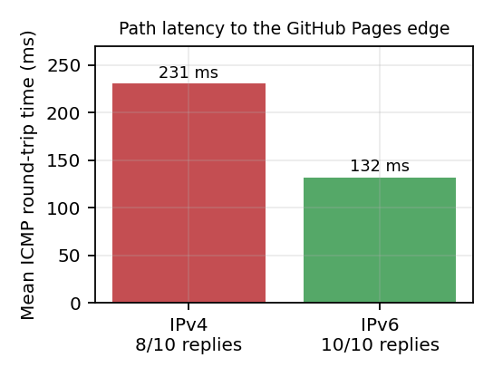
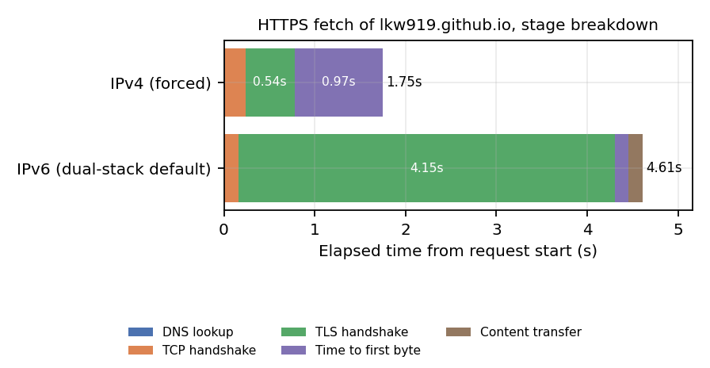

Network analysis · CSI205TC · 17 November 2026
What a GitHub Pages request actually costs
A page that loads in a second is doing more than it looks: a DNS lookup against a anycast pool, an ICMP path that half-answers, a TCP handshake that may have to back off, and a TLS negotiation. These are measurements of this site — taken from a dual-stack laptop on a university campus network, plus one packet capture — and they describe the two address families differently for reasons that are only partly about distance.
01 · DNS: four addresses per family, one anycast pool each
lkw919.github.io resolves to four IPv4 and four IPv6 addresses. Both
pools belong to the CDN in front of Pages, which is why the same name answers from
whichever edge is nearest rather than from a fixed host.
| Record | Addresses | TTL |
|---|---|---|
| A | 185.199.108.153 … 185.199.111.153 (four in 185.199.108.0/22) | 600 s |
| AAAA | 2606:50c0:8000::153 … ::8003::153 | 600 s |
The campus resolver answered in 6–21 ms. A 600-second TTL is short enough that an address change on the CDN side propagates in ten minutes, and long enough that a browser opening the same page twice does not pay for the lookup again. The IPv6 prefix sits inside the same CDN's allocation, which matches the HTTP headers below: this is a CDN-fronted service, not a single origin server.
02 · Round trip: the two families disagree

| Family | Replies | Mean | Min–max |
|---|---|---|---|
| IPv4 | 8 / 10 | 231 ms | 226–237 ms |
| IPv6 | 10 / 10 | 132 ms | 123–157 ms |
A hundred milliseconds is not a measurement artefact: the two stacks take different paths to the same city. The IPv4 probes also lost two packets, and the traceroute below suggests why — the destination and several carriers in between simply do not return TTL-expired messages, so a silent hop is indistinguishable from a dropped probe at this layer.
03 · Path: 20 hops versus 18, and a carrier-grade NAT in the middle
The IPv4 trace leaves campus at the fifth responding hop, crosses the CERNET backbone
(219.219.x, 101.4.x), passes a carrier-grade NAT hop in
100.64.0.0/10 — the range set aside precisely for that, since it is not
routable on the public internet — and then hands over to transit
(80.239.x, 62.115.x at 136 ms). The destination never
answered with TTL-expired, so the trace ends at the 20-hop limit rather than at the
host.
The IPv6 trace is both shorter and cleaner: campus (2001:250:500f::/48) →
CERNET2 (2001:da8::/32) → 2001:252::/32 → transit
2400:8800::/24 → destination in 18 hops, arriving at 123 ms — which
equals the IPv6 echo average. It does not traverse the IPv4 NAT hop at all.
04 · HTTPS: where the time actually goes

| Stage | IPv6 | IPv4 |
|---|---|---|
| DNS lookup | 7 ms | 10 ms |
| TCP handshake | 153 ms | 230 ms |
| TLS handshake | 4,148 ms | 536 ms |
| Time to first byte | 147 ms | 971 ms |
| Content transfer | 155 ms | 0 ms |
| Total | 4.61 s | 1.75 s |
The IPv4 column is what the round-trip time predicts: TCP handshake, then TLS, then first byte, each roughly a round trip. The IPv6 column is not. Four seconds inside a TLS handshake on a 132 ms path comes from the client stack, not the network: the Windows client logged “remote party requests renegotiation” and renegotiated mid-handshake. Run the same request from a browser using a different TLS implementation and the anomaly disappears.
The honest reading is that “which address family is faster” is a question about layers 5–7 as much as about layer 3. A faster path can still produce a slower page.
05 · What the capture shows
231 packets over one page load: 28 DNS, 203 TCP — 67 of those TLS — which is enough to see the protocol structure even though the content itself is unreadable.
- DNS. Four queries, four responses, each answer carrying all four addresses of its family with the 600-second TTL.
- A handshake that had to back off. The first SYN to one of the edge addresses went unanswered and was retransmitted at 0.31 s, 1.32 s, 2.34 s and 3.36 s — the textbook 1-2-4 second exponential backoff — before the SYN/ACK arrived at 3.70 s. That single attempt paid 3.39 s for its handshake, which is why a fetch from that host looked far worse than the ping average.
-
TLS 1.3, negotiated in the clear (the choice, not the content). The
Client Hello carries the server name and an ALPN list offering HTTP/2, plus thirteen
cipher suites including the TLS 1.3 set. The Server Hello selects
TLS_AES_128_GCM_SHA256— authenticated encryption with forward secrecy. - No plaintext request is visible, which is the point of the protocol. What a passive observer keeps is metadata: the server name, the offered protocols, certificate sizes and record timing.
- Loss is real, not just ICMP shyness. Later retransmissions confirm the path was dropping segments during the run, which is consistent with the 20 % ICMP loss measured from the campus client.
06 · HTTP behaviour and the edge
Plain http:// answers 301 pointing at
https://, and the HTTPS response sets a one-year
Strict-Transport-Security header — so a browser that has visited once
stops trying plain HTTP altogether. That single header is why the capture had to
target port 443.
The response identifies the edge that served it: a Tokyo cache with a cold-cache miss on the first fetch, which is the same city the round-trip times point at. The page is about 21 kB in four files, and the three sub-resources came back on their own connections at 0.60–0.63 s each — something a real browser avoids by reusing one keep-alive connection and multiplexing.
07 · What these measurements do not say
- One client, one vantage point, one day: this describes a campus network in November 2026, not GitHub Pages in general.
- The capture came from a second host whose own egress is slower and lossier, so it is used for protocol structure — DNS, handshake, cipher choice — and not for latency conclusions.
- The site is static: no back end, no forms, no database, so content delivery is the whole story here.
Method and raw material
Echo and path probes with the operating system's own tools, ten probes per family; fetch timings from a command-line client reporting per-stage durations; the capture taken with a packet analyser and read for DNS, TCP and TLS structure. The two figures on this page are generated from the logs by a small script, so they can be regenerated rather than redrawn by hand. The raw logs, the capture and the script live with the coursework source.